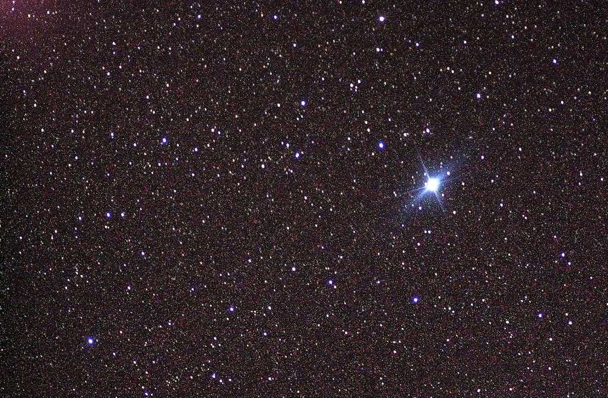

Canopus12
Canopus12 o Canopo es el nombre de la estrella Alfa Carinae (α Car). Con magnitud aparente -0,72, es la más brillante de la constelación de Carina («La Quilla») y la segunda más brillante del cielo nocturno tras Sirio (α Canis Majoris), cuya magnitud es -1,47. Es circumpolar al sur de la latitud 38° S. Situada a unos 310 años-luz del Sol, Canopus es una gigante brillante de tipo espectral A9, por lo que es esencialmente blanca cuando se ve a simple vista. Tiene una luminosidad más de 10 000 veces superior a la luminosidad del Sol, es ocho veces más masivo que el Sol y se ha expandido hasta 71 veces el radio del Sol. Su fotosfera ampliada tiene una temperatura efectiva de alrededor de 7400 K. Canopus está experimentando una quema de helio en el núcleo y actualmente se encuentra en la llamada fase de bucle azul de su evolución, habiendo pasado ya por la rama de las gigantes rojas tras agotar el hidrógeno de su núcleo. Canopus es una fuente de rayos X, probablemente emitidos por su corona. Por su prominente aspecto, Canopus ha sido objeto de la mitología de muchos pueblos antiguos. En general, se considera que su nombre proviene de la mitología. Canopo, que fue navegante de Menelao, rey de Esparta. El amanecer acrónico marcaba la fecha de la fiesta de Ptolemaia en Egipto. En la antigua India, recibió el nombre de Agastya por el venerado sabio Védico. Para los astrónomos chinos, era conocido como el Viejo del Polo Sur. |
 |
De acuerdo con la obra de Richard Hinckley Allen Star Names: Their Lore and Meaning,3 el nombre Canopus tiene dos orígenes posibles. El primero proviene de las leyendas de la guerra de Troya, ya que la constelación de Carina formaba parte en la antigüedad de la gigantesca constelación Argo Navis («El navío Argos»), es decir, el barco utilizado por Jasón y los Argonautas; la estrella más brillante de la constelación recibió el nombre del piloto del barco de Menelao, Canopus. El segundo origen del nombre proviene del idioma copto, hablado en Egipto; Kahi Nub («Tierra dorada»), haría referencia al color de la estrella vista sobre el horizonte desde este país, enrojecido por la extinción atmosférica.
En la antigua astrología hindú, la estrella es conocida como Agastya, uno de los rishi —sabios míticos—, hijo de los dioses Varuna y Mitra.
Argo Navis era la nave utilizada por Jasón y los argonautas en la leyenda de la Guerra de Troya. La estrella más brillante de la constelación recibió el nombre de un piloto de barco de otra leyenda griega: [Canopus (mitología)|Canopus]], piloto de la nave de Menelao en su búsqueda para recuperar a Helena de Troya después de que fuera raptada por Paris.4
Un antiguo puerto egipcio en ruinas llamado Canopus se encuentra cerca de la desembocadura del Nilo, lugar de la Batalla del Nilo. Se especula que su nombre deriva de la lengua egipcia Coptic Kahi Nub ("Tierra Dorada"), que hace referencia a cómo habría aparecido Canopus cerca del horizonte en el antiguo Egipto, enrojecido por la extinción atmosférica desde esa posición.45
En 2016, la Unión Astronómica Internacional organizó un Working Group on Star Names (WGSN) para catalogar y estandarizar los nombres propios de las estrellas.6 El primer boletín de la WGSN de julio de 2016 incluía una tabla con los dos primeros lotes de nombres aprobados por la WGSN, que incluía Canopus para esta estrella.7 Canopus está ahora incluido en el Catálogo de nombres de estrellas de la IAU.8.
Canopus marcaba tradicionalmente el timón de la nave Argo Navis.9 El cartógrafo celeste alemán Johann Bayer le dio en 1603 la denominación de α Argus (latinizado a Alpha Argus) como la estrella más brillante de la constelación. En 1763, el astrónomo francés Nicolas Louis de Lacaille dividió la enorme constelación en tres más pequeñas,10 y, por tanto, Canopus se convirtió en α Carinae (latinizado a Alpha Carinae). Aparece en el Bright Star Catalogue como HR 2326, en el Henry Draper Catalogue como HD 45348, y en el Hipparcos catalogue como HIP 30438.11 Flamsteed no numeró esta estrella austral, pero Benjamin Apthorp Gould le dio el número 7 (7 G. Carinae) en su Uranometria Argentina.12.
Un nombre ocasional que se ve en inglés es Soheil, o el femenino Soheila; en turco es Süheyl, o el femenino Süheyla, del nombre árabe para varias estrellas brillantes, سهيل suhayl,4 y Canopus era conocido como Suhel /'suːhEl/ en la época medieval.13 Las grafías alternativas incluyen Suhail, Souhail, Suhilon, Suheyl, Sohayl, Suhayil, Shoel, Sohil, Soheil, Sahil, Suhayeel, Sohayil, Sihel y Sihil.4 Un nombre alternativo era Wazn "peso" o Haḍar "suelo", posiblemente relacionado con su posición baja cerca del horizonte.4 De ahí viene su nombre en las tablas alfonsíes', Suhel ponderosus, una latinización de Al Suhayl al Wazn.4 Su nombre griego revivió durante el Renacimiento.13
te puede interesar